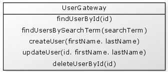
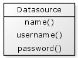

CFML provides a very simple syntax for accessing a database which in turn can easily lead to database interaction in any file throughout your application. Let's cover some guidelines on how you might structure your code using an object oriented approach.
The term "Gateway" is the name of a well known design pattern. This pattern describes an object whose purpose is to encapsulates access to an external system or resource. In our case the external resource is a relational database.
There are a number of other design patterns that cover a variety of database access techniques, but for simplicity and it's appropriateness within CFML we will simply use the term Gateway to mean an object that communicates with a database. Our Gateways effectively represent a layer above the database and are the only doorway to accessing its data.
Let's take a look at a simple Gateway object:

To use this Gateway you may write code such as:
{% highlight cfm %}Considering that Gateways are our doorway to a database, they will need to know about the datasource defined within the ColdFusion Administrator.
In many typical CFML applications the datasource details are stored in the application scope and used wherever required:
{% highlight cfm %}However this technique of accessing the global application scope directly can lead to code that is difficult to change. A better technique is to provide the Datasource details to the Gateway objects when they are created.
Firstly, let's create a Datasource object that will contain our datasource details:

The name(), username() and password() functions simply return the name, username and password of the datasource.
Our Datasource component may be written as follows:
{% highlight cfm %}Once we have created a Datasource object then we can provide this object to all of our Gateway objects. For example:
{% highlight cfm %}So here we first create a datasource object and provide the datasource details to its init() function. Next we create the Gateway objects a provide this Datasource object to their init() functions.
This technique of passing the datasource into the gateway is a form of dependency injection.
So what exactly is the responsibility of a Gateway object. Let's cover some guidelines for Gateway design.
We can start with some general guidelines for developing Gateways in your application:
Let's cover each of these in turn:
As a general rule, if you need to write some SQL then it should be in a Gateway. This makes any SQL much easier to manage because it is all contained in a single object. This also helps to minimise queries being duplicated throughout your code.
Good object design tries to keep the purpose of objects very narrow; they should not try to do a wide scope of things. In the case of Gateways, they have the very specific role of performing queries, and that's all. This means that objects are neither passed into or out of the Gateway functions.
When creating Gateways they should be designed and named based on their "logical" purpose. For example, it is better to have a "UserGateway" and a "ProductGateway" rather than an "AdminGateway" and "PublicGateway". This means that the UserGateway, for example, provides both admin and public functions grouped together.
A singleton is an object that only has one "instance" in an application. It is created once on applcation startup and stored in the application scope. Gateways are good candidates for singletons:
{% highlight cfm %}The <cftransaction> tag should not be used within Gateways. As Gateways are performing the individual queries, it is up to the calling code to manage any transactional requirements surrounding multiple Gateway function calls.
Let's implement the beginnings of a simple UserGateway object.
{% highlight cfm %}We might use this Gateway as follows:
{% highlight cfm %}It is a good idea to ensure that your function names are not too short. For example, avoid names such as create() or delete(). It is better to have more explicit names such as createUser() or deleteUserById(). This will better serve future needs such as if you needed to add functions such as createGuestUser() or deleteUserByUsername().
There are times where is may not be clear which Gateway object your query needs to go in. For example, suppose you have a system for managing user submitted recipes. You may have a UserGateway for user related queries and a RecipeGateway for recipe related queries. However, if you need to produce a listing that contained both Users and Recipes then where should your query go? And perhaps the recipes also belong to Categories, which are managed via a Category gateway, also needed to be included in the listing.
There are various options but if the intent of the query is well understood it helps us to decide which gateway the query should go in. In this example the intent is about displaying recipes, whether it be by user or category, so this query is most likely suited for the RecipeGateway.
If the intent genuinely belongs in more than one area, then create a new Gateway specifically for that grouping; a UserRecipeGateway. If you need one query in this grouped gateway then it's likely you will need more here.
It is common for us to collect dates, times or other special kinds of user interface elements in a form and pass these down for saving to a database. When we get to the Gateway level we do not want to expose our gateway to any details about our form. The important goal here is that if our form is changed then it must not have any impact on our Gateway.
For example, suppose we collect a date in a form field in MM/DD/YYYY format. We must convert this to a date/time object before it is passed into the Gateway. The Gateway then only needs to deal with a date object, and does not perform any string parsing. If we then change the format of the date field to accept "DD/MM/YYYY" on the form for users in a different region then we will not have to change our Gateway.
Another example is with forms that contain a dynamic number of fields. For example, you may have a form that contains field names preference_1, preference_2, preference_3, and so on, where the number of preferences is different depending on the user currently logged in. In this situation the preferences should be converted to a list, a struct or an array before being provided to the Gateway. If the form field names were changed for any reason then the Gateway could remain unchanged.
So the important guide here is that the Gateway should never work with the URL or form scopes directly, and in particular should never perform parsing of form field data. This must be done prior to the Gateway functions being called.
When performing select queries it is common that you will want to select the same (or a similar) set of columns in many queries. For example, you may have functions such as
In these cases it may be convenient to create a new private function named findUsersByFilter() that can handle all of these types of queries. If possible this function should remain private to the Gateway and specific public functions are written that call it.
For example:
{% highlight cfm %}This can be particularly useful if you have a common set of tables that need to be joined on most queries.
However, be careful not to let your "find by filter" function become too complex or large, otherwise it may become a one thousand line monster for you to maintain. If it starts to become too complicated to understand then it is better to create new functions for the complicated queries and for you to "wear" the cost of the duplicate code. After all, at least the duplicate code will typically only exists in the same single component.
It is common to need to execute queries that are identical except for the sort order. In these cases an additional parameter can be passed into the Gateway to specify the sort order required.
However, it is useful to minimise passing in "SQL syntax" ordering criteria into your Gateways. For example, suppose we have the following query:
{% highlight cfm %}When using this function we may write something like:
{% highlight cfm %}The problem with here is that the code that uses the Gateway needs to know details about the underlying query in order to provide the order by values. If the "aliases" of the gateway query needed to change for any reason then we would also need to change all of the calling code.
An alternative approach is to pass in keywords that represent the sortable columns. For example, it would be better to write this:
{% highlight cfm %}And change our query order by statement slightly by creating a lookup struct of "sortable" fields and the corresponding sort values.
{% highlight cfm %}For simple Gateways this kind of additional work may not be required, but if there are numerous calls to a Gateway with varied order by statements, then this may be of benefit.
If you have an application that needs to access multiple databases, then this is quite easily managed by creating multiple datasource objects; one for each database.
If different Gateways need different datasources, then only the relevant Datasource object is provided to the Gateway's init() function.
If a single Gateway needs to access multiple datasources, then multiple Datasources objects are provided to the Gateways init() function.
For example:
{% highlight cfm %}If you have a situation where you need to dynamically generate your SQL statements. There may be complexities in your application that require complex select lists and differing table joins depending on certain criteria. This kind of work can significantly complicate your SQL statements and make your Gateway objects complicated to maintain. In cases such as these it may be better to separate out the SQL construction into a separate object to leave the actual execution of the SQL for the Gateway.
For example, suppose you have a very complicated reporting query that provides significantly different data depending on the currently logged in user. You can create new component ReportingQueryBuilder.cfc to generate this SQL for you.
The calling code may be written something like:
{% highlight cfm %}Then in your Gateway function you silently generates the required SQL:
{% highlight cfm %}The ReportQueryBuilder performs whatever complicated logic is required to construct the SQL and then simply passes the SQL back via its sql() function to be executed by the Gateway.
Keep in mind that with dynamic SQL such as this we are unable to use <cfqueryparam> so data type checking of any user input would be required.